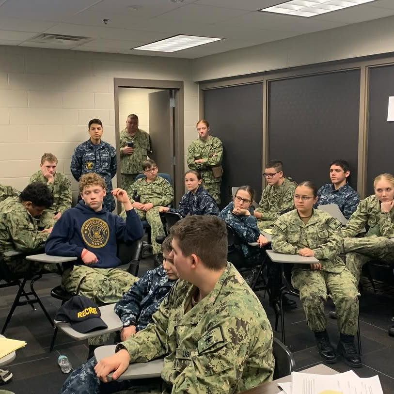

Resource Hub
Find what you need. Get back to the mission.
Everything cadets, parents, and staff need — in one organized place. Drill schedules, forms, training information, and more.

Enrollment and expectations
Forms, contact paths, payments, and first-drill guidance.
Internal references
Staff resources and internal unit communication. Login required.
JSCTC Buffalo
Schedules, course descriptions, reporting instructions, and training updates.